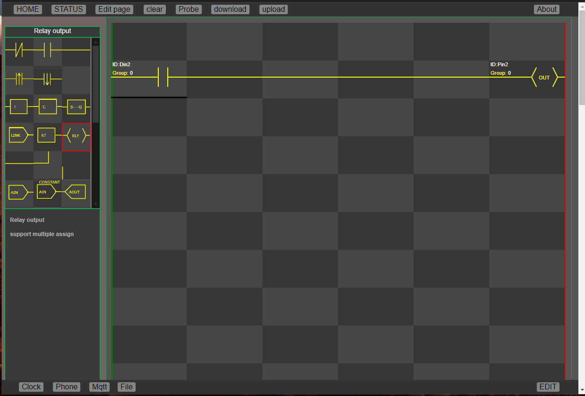
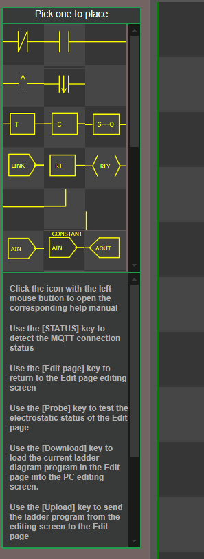

Consider this a simplest programmable logic control with powerful functionality since the MCU has system and wifi on chip.
The chip provides a very good Web application environment and intuitive human-machine interface. Compared with equipment with the same function, the cost of PLC is greatly reduced.
Also, the development environment has evolved over several generations, so it's a right to redevelopment.
This PLC design is basically open source code and schematics. However, some software does not belong to us and cannot be made available to the original designers.
The mainboard is mainly composed of two MCUs, one for the main program and the other for the local Mqtt broker. If Local Mqtt is not required, the second MCU will be unloaded.
To increase feasibility, the input and output devices are mounted on another module, so the user can configure any combination as required.
There are many ways to connect the motherboard to the input/output modules, including RS232, RS485 and Mqtt. xhttp etc.
The system looks complex, however, everything is ready to use and the system can be set up very quickly.
| Item | Description | Details | Stock |
|---|---|---|---|
| Mainboard PLCMQ-001 | Mainboard with Mqtt borker | Donkey lab. | 0 |
| Mainboard PLCIN-001 | Mainboard with 6 isolated input | Donkey lab. | 0 |
| Plastic rail mount case | For dll donkey lab. products | Available in market | |
| 6 Relay output board with ESP32 | For Mqtt link up | Lilygo | Available in market |
| 6 Relay output board | For wire linkup | Lilygo | Available in market |
| 4 Relay output board | For wire linkup | little interface board required | Available in market |
| 4 channel Analog input | RS232 linkup Analog input | Donkey lab. | 0 |
| 2in 2 out channel Analog | RS232 linkup Analog in/out board, fully isolated | Donkey lab. | 0 |
| 8 channel spliter board | RS232 8 channel, spliter | Donkey lab. | 0 |
| User prototype board | Power inlet and USB c linkup to mainboard | Donkey lab. | 0 |
After setup wifi SSID and PW, Open URL program will get the screen as bellow
| Key Name | Description |
|---|---|
| WIFI Disable | For input SSID and PASSWORD |
| Mqtt Disable | get wifi or mqtt connect status |
| Display Enable | Return to the page for edit ladder program |
| LAN phone Enable | clear the edit screen |
| MQTT phone Enable | Get the program status |
| Remote update Enable | Download the ladder program PLC hardware |
| EDIT required password | Upload program to PLC hareware |
|  | (1) Use the mouse left click to select, and the icon cannot be dragged to the editing area. Move the mouse to the editing area and left-click. (2) Right-click the selected icon, and a help menu will pop up on the right. The help menu must be closed to return to the editing window. (3) You can select Blank Icons to delete unwanted icons. |